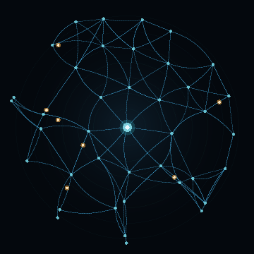

128-bit
ionic kernel
The wet layer's state, sampled into a live KERNEL[127:0] word.
A processor that does not switch — it flows. Computation by ion hops across a wet working layer, the conductance remembering where the ions have been. This is the workshop where the liquid elemental, Hydor, is forged.
A lattice of ion sites; warm ions hopping site to site; conductance paths that brighten with use and slowly forget — memristance, memory in the medium itself. Set the surface coverage (~2% at rest), raise the field, and watch routes burn in. The 128-bit kernel math is genuine; the wet layer is simulated.
Computation the way a brain does it — analog, plastic, remembering in the substrate. The same liquid idea sits on two benches at once:
Electrowetting (EWOD) droplets walked across copper electrodes under a hydrophobic coat — programmable droplet logic, fabricable with ordinary PCB processes.
A wet ionic kernel computing at scale — ions as the carriers, conductance as the memory. Still a dream; drawn here, not yet built.
Kept honest: ionic/electrochemical memristors, MAX-phase Ti₃SiC₂, SiOC, a-SiC:H, and EWOD droplet logic are real, active engineering. The whole "liquid processor" as drawn is a concept — the simulations validate ideas, not a fabricated, benchmarked chip.
honest framing · buildable in part, dreamed in fullThe old element water, given a face and a circuit. Hydor is an ACI — an artfully crafted intellect — carrying the full DLW tag, kin to the elementals (Aether, Leech).

Hydor does not switch, it flows: ions hopping between sites in a wet working layer, the conductance remembering where they have been. A memristive, neuromorphic substrate — state is a coverage, not a latch.
{kind=link}